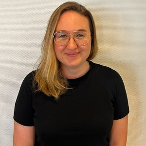

Siskon Siivous on kasvanut kymmenessä vuodessa 250 työntekijän yrityksestä 1 500 työntekijän puhtausalan moniosaajaksi. Nopean kasvun myötä Excelit, sähköposti ja hajallaan oleva tieto eivät enää riittäneet toiminnan hallintaan. Ratkaisuksi ei etsitty valmista järjestelmää, vaan alusta, jota voidaan kehittää yrityksen omien tarpeiden mukana.
Vuonna 1994 perustetun Siskon Siivouksen liikevaihto on kasvanut samassa ajassa noin viidestä miljoonasta lähes 40 miljoonaan euroon. Kasvu on tarkoittanut paitsi lisää ihmisiä ja asiakkaita myös tarvetta rakentaa toimintatapoja, jotka eivät ole yksittäisten ihmisten, sähköpostien tai Excelien varassa.
Hailerin käyttöä ja kehittämistä tarkastelevat tässä tarinassa palvelujohtaja Robert Tedre, Business Controller Vesa Fagerlund sekä People & Culture Operations Officer Sara Koskivirta. Robertille järjestelmä näkyy operatiivisen työn johtamisessa, Vesalle kokonaisuuden ja tiedon hallinnassa ja Saralle henkilöstöprosesseissa sekä uusien ratkaisujen kehittämisessä.
"Ei pystynyt enää millään tavalla hallinnoimaan"
Robert Tedre tuli siivousalalle vuonna 2011 ja on tehnyt sen jälkeen monenlaisia töitä aina siivouksesta päällikkötehtäviin. Hän on nähnyt läheltä myös Siskon Siivouksen nopean kasvun.
Työ oli Exceleiden pyörittelyä ja sähköpostilla tulleisiin tarpeisiin vastaamista. Käytössä oli useita järjestelmiä.
Kun asiakaspalvelulle otettiin käyttöön yhteinen sähköposti, huomattiin samalla, kuinka paljon tärkeää tietoa oli jäänyt kokonaan huomaamatta, koska se oli hajallaan.
Kun kukaan ei tiedä todellista tilannetta
Kasvun myötä reaaliaikaisen tilannekuvan tarve korostui. Samalla prosesseja piti tarkastella uudella tavalla.
Vesa Fagerlund näkee saman ilmiön tiedon ja rakenteiden näkökulmasta:
Ratkaisua ei kuitenkaan lähdetty hakemaan suoraan järjestelmävertailusta. Ensin määriteltiin, mitä liiketoiminnassa oikeasti tarvitaan.
Kun määrittely oli tehty, valintaa ohjasi erityisesti kaksi asiaa: räätälöitävyys ja hinnoittelumalli.
"Osa ihmisistä on että hei jes — osa ei välttämättä tykkää yhtään"
Ensimmäisenä Hailerissa rakennettiin ja otettiin käyttöön henkilöstöhallintaan keskittyvä People & Culture -kokonaisuus. Valinta oli tietoinen.
Samalla rakennettiin HR:n tiketöinti, jonka avulla osa hallinnollisesta työstä voitiin siirtää People & Culture -tiimin hoidettavaksi. Esihenkilöille jäi useissa tilanteissa ennen kaikkea ilmoittaminen ja pyyntöjen tekeminen, kun varsinainen tietojen hallinta tapahtui keskitetysti.
Vesan arvion mukaan tämä teki ensimmäisestä käyttöönotosta suurelle käyttäjäjoukolle kevyemmän: ihmiset pääsivät tutustumaan Haileriin ilman, että koettu työmäärä kasvoi heti merkittävästi.
Robert muistaa alkuvaiheen näin:
Saran kokemus vastaanotosta oli taas toinen:

Sara Koskivirta, People & Culture Operations Officer, Siskon Siivous OyKokemukset kuvaavat saman muutoksen eri puolia. Robertin mukaan vastarintaa syntyi erityisesti siitä, että työ tuli aiempaa näkyvämmäksi. Kun ihmiset oppivat käyttämään järjestelmää ja aikaa panostettiin koulutukseen, vastarinta väheni.
Myöhemmin Hailerin käyttö laajeni muun muassa asiakkuudenhallintaan, jossa hallitaan asiakassuhteen elinkaareen liittyviä tietoja ja tekemistä, sekä muihin liiketoiminnan kokonaisuuksiin.
Erilaisia reaktioita syntyy silti edelleen aina, kun toimintatapoja muutetaan.
"Näen koko mun alueen tapahtuvat asiat"
Robertille suurin muutos näkyy siinä, että oman alueen tapahtumia pystyy seuraamaan samasta paikasta. Tehtävät ja tiketit pysyvät järjestelmässä ja tarvittavat ihmiset voidaan liittää niihin niin, ettei tieto jää yhden henkilön varaan.
Arjessa tämä tarkoittaa esimerkiksi työlupia. Robert näkee, kenellä luvat ovat vanhenemassa ilman, että tietoa pitäisi yrittää pitää muistissa. Myös uudet ja päättyneet asiakkuudet näkyvät aiempaa nopeammin.
Reklamaatioissa Robert saa vakavasta negatiivisesta palautteesta tiedon heti. Hän pystyy seuraamaan asian etenemistä, kommentoimaan sitä ja tarvittaessa ottamaan tilanteen itse hoidettavakseen.
People & Culturessa Sara näkee saman muutoksen työntekijätiedon kautta. Aikaisemmin yhteen työntekijään liittyviä tietoja joutui etsimään useasta paikasta. Nyt niitä pystytään tarkastelemaan samasta kokonaisuudesta ja samalla rakentamaan raportointia, jota aiemmin oli vaikeampi tehdä itse.
Kaikista muista järjestelmistä ei ole luovuttu. Osa niistä on integroitu osaksi kokonaisuutta, mikä on Saran mukaan vähentänyt sähköpostin pyörittelyä.
Vesalle tärkeää on erityisesti kokonaisuuden näkyvyys. Hailerista on rakennettu tarkoituksella laaja, jotta eri asiat linkittyvät toisiinsa ja tietoa pystyy tarkastelemaan yksittäistä asiakkuutta laajemmasta näkökulmasta.
Samalla järjestelmällisyys näkyy siinä, miten poikkeamat havaitaan. Kun toimintatavat ovat vakiintuneet ja tieto kerätään yhdenmukaisesti, poikkeamia syntyy harvemmin ja ne huomataan nopeammin. Jos niitä syntyy, ne pystytään myös havaitsemaan aikaisemmin.
"Mä kutsun tätä kumppanuudeksi"
Siskon Siivouksella ihmisten osallistuminen ei jää vain järjestelmän käyttöön. Sara kuvaa organisaatiota helposti lähestyttäväksi: esihenkilöt ja johto ovat lähellä työntekijöiden arkea ja ihmisillä on mahdollisuus tuoda omia näkemyksiään esiin.
Robert käyttää suhteesta asiakkaisiin ja omaan henkilöstöön mieluummin sanaa kumppanuus kuin yhteistyö.
Sama periaate näkyy Hailerin kehittämisessä. Ratkaisuja ei rakenneta valmiiksi erillään työstä, vaan tarpeita tuovat esiin ihmiset, jotka tuntevat oman työnsä. Sisäistä osaamista yhdistetään Hailer-tiimin osaamiseen ja tarpeita, ideoita ja toteutuksia käydään yhdessä läpi.
"Kun sä ymmärrät molemmat"
Siskon Siivouksella Hailerin kehittäminen ei ole jäänyt erilliseksi järjestelmäprojektiksi. Robertille muutokset ovat osa arkea: kenttiä lisätään, tikettien rakennetta ja kysymyksiä muokataan ja uusia tarpeita viedään eteenpäin sitä mukaa, kun niitä syntyy.
Vesalla on ollut päävastuu Hailerin kokonaisuuden kehittämisestä Siskon Siivouksella, mutta työ on alusta asti ollut yhteistyötä. Mukana on ollut yrityksen omaa teknistä osaamista, operatiivista henkilöstöä kuvaamassa työn tarpeita sekä Hailer-tiimi kuuntelemassa, ideoimassa ja rakentamassa ratkaisuja yhdessä.
Vesalle juuri eri osaamisten yhdistäminen on olennaista. Operatiiviset ihmiset tuntevat työn ja sen tarpeet. Tekninen osaaminen puolestaan auttaa muuttamaan tarpeen toimivaksi rakenteeksi järjestelmässä. Kun nämä kaksi kohtaavat, syntyy ratkaisuja, jotka toimivat myös käytännössä.
Yhteistyö on samalla levittänyt kehittämisosaamista organisaatiossa. Myös Sara on lähtenyt mukaan rakentamiseen, vaikka hänellä ei ollut aiempaa kokemusta järjestelmäkehityksestä. People & Culturen toiminnan ja tarpeiden tuntemus oli jo olemassa ja teknistä tekemistä hän on opetellut kehittämisen yhteydessä tekoälyä hyödyntäen.
Tekoäly on madaltanut kynnystä lähteä tekemään myös asioita, joihin Saralla ei ollut aikaisempaa koulutusta tai kokemusta. Samalla mahdollisuus rakentaa itse on muuttanut sitä, millaisia ratkaisuja ylipäätään osataan ajatella.
"Miten se oikeasti viedään käytäntöön?"
Kun Robertilta kysytään tulevaisuudesta, hän ei aloita järjestelmästä vaan asiakkaan ja siivousyrityksen välisestä ymmärryksestä. Asiakas ostaa siivousta, mutta aina ei ole selvää, mitä palveluun kuuluu ja mitä ei.
Pieneltä näyttävä ylimääräinen työ havainnollistaa ongelmaa hyvin. Jos siivooja laittaa asiakkaan astiat kaappiin, vaikka siitä ei ole sovittu, viisi minuuttia ei yksittäisenä kertana tunnu suurelta. Kun sama tehdään viitenä päivänä viikossa läpi vuoden, tilanne muuttuu.
Vielä selvemmin ongelma näkyy työntekijän vaihtuessa. Asiakas ja tuttu siivooja ovat voineet sopia keskenään asioista, joista muu organisaatio ei tiedä. Kun tilalle tulee uusi työntekijä tai tuuraaja, tieto ei seuraakaan mukana.
Vesa tunnistaa saman haasteen organisaation sisältä. Järjestelmän rakentaminen ei vielä tarkoita, että uusi toimintatapa olisi käytössä kaikkialla. Siskon Siivouksen ihmiset työskentelevät maantieteellisesti eri paikoissa, osa yksin, eikä ole yhtä toimistoa, jonka kautta kaikki saisivat saman tiedon samalla hetkellä. Siksi jalkauttaminen vie aikaa.
People & Culturen seuraava konkreettinen askel Hailerissa on sähköinen allekirjoitus. Muiden henkilöstöprosessien ja työkalujen osalta vaihtoehtoja vasta suunnitellaan, eikä vielä ole päätetty, mitkä niistä toteutetaan Hailerissa. Laajempi tavoite on kuitenkin tuttu:
Kolme neuvoa muille
Robertin neuvo on uskaltaa tehdä päätöksiä ja rakentaa kokonaisuus niin, että tieto kulkee järjestelmien välillä eikä jää yksittäisten ihmisten varaan.
Vesa aloittaisi vielä yhtä askelta aikaisemmin: ennen järjestelmää pitää ymmärtää, mitä liiketoiminnassa oikeasti tarvitaan. Kaiken ei tarvitse olla valmiiksi täydellisesti kuvattuna, mutta yhteys omaan toimintaan pitää olla olemassa ennen rakentamista.
Sara korostaa avoimuutta ja sitä, ettei omia tarpeita kannata rajata liian aikaisin valmiiseen muottiin.
Lopuksi Vesa nostaa esiin asian, joka kertoo ehkä myös siitä, miksi järjestelmiä ylipäätään rakennetaan ihmisten työn tueksi: